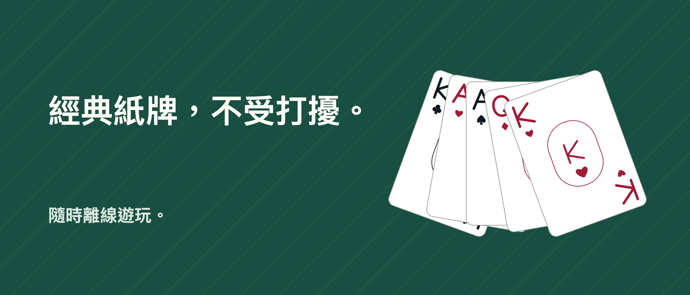

接龍紙牌 Unbound

一張張牌，留一點時間給自己。
和紙牌相伴的片刻，不受打擾。經典接龍支援每次翻1張或3張，無廣告、無須IFG帳號，也無須訂閱。
復原，再試一次 復原、重做和合法移動提示均免費提供。可以拖曳紙牌，也可以依序點選紙牌和目標位置。放鬆模式隱藏時間；經典模式顯示時間和移動次數。
隨時回來繼續 存檔和統計資料儲存在裝置上。選擇隨機牌局，或選擇初始配置已有驗證解法的牌局，也可以體驗每日挑戰。隨機牌局不保證有解；即使初始配置已經驗證，後續選擇仍可能讓牌局陷入僵局。
Pro帶來更多玩法 一次購買即可加入新接龍、單花色／雙花色／四花色蜘蛛接龍、挑戰存檔和更多個人化選項。共有六種牌桌、六種牌背和三種牌面風格，無須購買或消耗提示。
遊戲支援離線遊玩。購買或回復Pro可能需要網路和Apple帳號。進度不會在裝置間同步，移除App可能會刪除進度。回復Pro不會找回已刪除的進度。